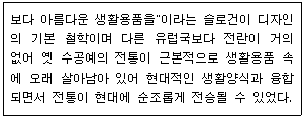
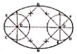
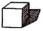
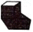
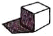
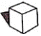

컴퓨터그래픽스운용기능사 (2011-10-09 기출문제)
1과목: 산업디자인 일반
1. 선이 이동한 궤적에 의해 생기는 것은?
- 색채
- 선
- 면
- 입체
(정답률: 92%)

2. 기계의 사용을 거부하고 수공작업에 의한 미술공예운동을 펼쳤으며, 이후 신미술(아르누보) 운동에 큰 영향을 준 사람은?
- 존 러스킨(Ruskin. J.)
- 윌리엄 모리스(Morris. W.)
- 요셉 호프만(Hoffmann. J.)
- 클로만 로저(Moser. K.)
(정답률: 89%)
3. 고전적 각선미를 강조하여 단순한 구성 속에 기하학적인 형식으로 개성창조를 목적으로 한 운동이며, 아르누보(Art Nouveau)의 신예술양식이 미친 오스트리아의 새로운 조형 활동은?
- 데스틸(De Still)
- 시세션(Secession)
- 큐비즘(Cubism)
- 아르데코(Art deco)
(정답률: 59%)
4. 다음 중 상자형 포장재료와 가장 거리가 먼 것은?
- 목재
- 종이
- 플라스틱
- 비닐
(정답률: 82%)
5. 실내 공간 중 시선이 많이 머무는 곳으로 실내분위기 형성에 가장 큰 영향을 미치는 실내디자인 요소는?
- 바닥
- 벽
- 천장
- 마루
(정답률: 95%)
6. 다음 중 디자인의 원리가 아닌 것은?
- 균형, 강조
- 비례, 조화
- 형태, 색채
- 통일, 반복
(정답률: 64%)
7. 디자인의 조건 중 심미성에 관한 의미로 가장 적절한 것은?
- 도구를 아름답게 하기 위한 표현으로 회화적 장식을 하는 것
- 기능과 유기적으로 연결된 형태, 색채, 재질의 미를 창조하는 것
- 도구를 사용하기 원활하게 하고 실수, 피로 등을 방지하는 것
- 지각된 여러 요구사항을 간결하게, 낭비 없이 성취하는 것
(정답률: 67%)
8. 다음에서 설명하는 디자인의 특징을 갖고 있는 지역이나 국가는?

- 스칸디나비아의 디자인
- 영국의 디자인
- 발칸반도의 디자인
- 프랑스의 디자인
(정답률: 65%)
9. 디자인 리서치(Design research)란?
- 디자인의 제조원가
- 디자인의 조사연구
- 디자인의 특허권
- 디자인의 평가
(정답률: 88%)
10. 타이포그래피의 속성 중 글자가 얼마나 잘 인식하고 구별할 수 있는가를 의미하는 용어는?
- 가독성(readability)
- 판독성(legibility)
- 무게감(weight)
- 스타일(Style)
(정답률: 53%)
11. 실내디자인의 요소 중 개구부(開口部)는 창, 출입문, 배연구 등으로 구분된다. 다음 중 개구부의 디자인에서 고려해야 할 사항으로 거리가 먼 것은?
- 목적, 기능, 형태가 적합해야 한다.
- 건물 외관에서는 포인트가 되고, 건물과 균형을 이루어야 한다.
- 실내계획에서는 주변과 달리 특이한 형태나 색으로 눈에 띄게 해야 한다.
- 유지관리를 위해 안정성, 개폐 방법 등을 고려해야 한다.
(정답률: 88%)
12. 산업디자인 작업 시 고려해야 할 조건과 거리가 먼 것은?
- 합목적성
- 심미성
- 소비성
- 독창성
(정답률: 77%)
13. 표현, 묘사라는 뜻으로 제품 디자인 과정 중 스타일이 결정되는 단계에서 현존하지 않는 것을 실물이 있는 것처럼 표현하는 완성 예상도는?
- 렌더링
- 투시도
- 목업
- 모델링
(정답률: 71%)
14. 제품 디자인 과정에서 디자이너의 아이디어를 확인하기 위하여 디자인 안을 입체화시키는 작업은?
- 렌더링
- 모델링
- 스케치
- 드로잉
(정답률: 59%)
15. 광고 카피에 대한 설명 중 틀린 것은?
- 캡션은 이미지의 보완적 설명문이다.
- 헤드라인은 카피의 중심으로 본문에 해당하는 부분이다.
- 구매심리과정인 AIDMA 법칙을 이용하여 광고 카피에 적용한다.
- 신문광고의 구성요소 중 주목률을 결정하는 것은 헤드라인이다.
(정답률: 70%)
16. 패션산업에서의 토탈패션(Total fashion coordination)과 관계있는 마케팅 전략은?
- 비차별적 마케팅 전략
- 집중적 마케팅 전략
- 차별적 마케팅 전략
- 부분적 마케팅 전략
(정답률: 53%)
17. 베르트하이머의 "부분과 부분이 서로 유사성에 의해 그룹을 이루어 보인다." 는 유사성의 원리와 관계가 없는 것은?
- 크기의 요인
- 형태의 요인
- 명도의 요인
- 온도의 요인
(정답률: 79%)
18. 주거공간의 실내 계획 시 고려사항 중 가장 거리가 먼 것은?
- 기후, 방위
- 가구 종류
- 위치, 환경
- 거주자의 생활양식
(정답률: 67%)
19. 다음 중 게슈탈트 지각심리 요소와 관련이 없는 것은?
- 근접성의 법칙
- 통일성의 법칙
- 유사성의 법칙
- 폐쇄성의 법칙
(정답률: 72%)
20. 광고 계획의 수립과정에 대한 설명 중 "광고소구대상의 결정"과 관련된 것은?
- 구매영향력 행사자, 사용자 등 누구를 대상으로 할 것인가를 결정한다.
- 메시지전략, 표현전략이 정해지면 적절한 광고주제, 광고소구를 수립한다.
- 광고활동으로 인해 달성하려고 하는 목표를 설정한다.
- 광고조사를 바탕으로 예비광고계획을 세우고 시험광고를 실시한다.
(정답률: 69%)
2과목: 색채 및 도법
21. 다음 중 한국 표준 색이름에 기초한 관용색명의 색표기가 틀린 것은?
- 갈색 : 2.5YR 4/8
- 석류색 : 7.5Y 3/10
- 회색 : N5
- 마젠다 : 5RP 5/14
(정답률: 64%)
22. 다음 도형은 무엇을 구하기 위한 것인가?

- 두 원을 격리시킨 타원 그리기
- 두 원을 연접시킨 타원 그리기
- 장축과 단축이 주어진 타원 그리기
- 4중심법에 의한 타원 그리기
(정답률: 66%)
23. 자연광에 의한 육면체의 음영작도에서 역광일 경우의 표현방법으로 옳은 것은?




(정답률: 77%)
24. 실내공간은 배색에 따라 심리적 온도감의 차이가 있다. 추운 지역에 실내 공간 색으로 다음 중 가장 적합한 것은?
- 주황
- 연두
- 파랑
- 흰색
(정답률: 83%)
25. 먼셀 색체계와 오스트발트 색채계의 공통점에 대한 설명이 옳은 것은?
- 20색상환을 사용한다.
- 색상환에서 마주보는 색은 서로 보색관계이다.
- 색입체를 수직으로 절단하면 등명도면의 배열이 된다.
- 순색들의 채도단계는 각기 다르다.
(정답률: 69%)
26. 육면체의 1개 모서리가 화면과 평행하고, 다른 2방향의 모서리가 각각 화면에 경사져 2개의 소점을 가지는 투시도는?
- 평행 투시도
- 사각 투시도
- 유각 투시도
- 특수 투시도
(정답률: 63%)
27. 오스트발트 색체계의 색 표기법으로 옳은 것은?
- 5R 4/14
- 19:pB
- 14gc
- s20230-Y90R
(정답률: 44%)
28. 다음 중 색광의 혼합으로 틀린 것은?
- Red + Green = Yellow
- Red + Blue = Magenta
- Green + Blue = Cyan
- Green + Red + Blue = Black
(정답률: 71%)
29. 다음 중 보색에 대한 설명으로 틀린 것은?
- 혼합하여 무채색이 되는 두 가지 색은 서로 보색관계이다.
- 모든 2차색은 그 색에 포함되지 않은 원색과 보색관계이다.
- 회전혼색의 결과 무채색이 되는 보색을 심리보색이라 한다.
- 보색관계인 두 색의 색료 혼합은 검정이 가까운 색이 된다.
(정답률: 47%)
30. 다음 잔상의 예 중 성격이 다른 것은?
- 쥐불놀이
- 녹색 수술복
- 애니메이션 영화
- TV
(정답률: 69%)
31. 다음 중 색의 감정적인 효과가 틀린 것은?
- 혼합하여 무채색이 되는 두 가지 색은 서로 보색관계이다.
- 정신집중을 요하는 사무공간은 단파장의 색이 적합하다.
- 숙면을 위한 침실의 색은 난색계열의 고채도 색이 적합하다.
- 차분한 이미지를 주는 의복의 색은 한색계열의 저채도 색이 적합하다.
(정답률: 69%)
32. 다음 설명 중 색의 대비효과 종류가 다른 하나는?
- 빨강 색지 위에 놓인 회색 도형은 초록빛 회색으로 보인다.
- 빨강 색지를 보다가 초록 색지를 보면 보다 선명해 보인다.
- 회색 색지 위의 색 도형은 파랑 색지 위에 있을 때보다 채도가 높아 보인다.
- 흰색 색지 위의 회색 도형은 검정 색지 위에 있을 때보다 더 어둡게 보인다.
(정답률: 53%)
33. 실내 공간을 입체적으로 표현하는 도면은?
- 평면도
- 입면도
- 단면도
- 투시도
(정답률: 65%)
34. 다음 중 디바이더(divider)의 용도로 옳은 것은?
- 선의 등분
- 직선 작도
- 곡선 작도
- 나선 작도
(정답률: 77%)
35. 다음 중 가는 2점 쇄선의 용도는?(오류 신고가 접수된 문제입니다. 반드시 정답과 해설을 확인하시기 바랍니다.)
- 중심선, 수준면선
- 상상선, 중심선
- 기준선, 피치선
- 기준선, 특수 지정선
(정답률: 46%)
36. 처음으로 프리즘(Prism)을 통하여 태양광선을 스팩트럼으로 분광하는 실험을 한 사람은?
- 뉴턴
- 먼셀
- 스펜서
- 오스트발트
(정답률: 71%)
37. 다음 중 황금 비율은?
- 1:1.148
- 1 : 1.518
- 1 : 1.618
- 1 : 1.718
(정답률: 86%)
38. 도면의 양식에 관한 설명 중 틀린 것은?
- 도면은 원칙적으로 A4의 크기로 접는다.
- 표재란은 표지의 긴 쪽 길이를 가로 방향으로 한 X형 또는 긴 쪽의 길이를 세로 방향으로 한 Y형의 어느 것이든지, 그림을 그릴 영역 안의 오른쪽 아래 구석에 위치시키는 것이 좋다.
- 그림을 그리는 영역을 한정하기 위한 윤곽선은 0.5mm이상 두께의 실선으로 그리는 것이 좋다.
- 도면을 철할 경우, 구멍 뚫기의 여유는 최소 너비 10mm(윤곽선 포함)로 오른쪽 끝에 둔다.
(정답률: 42%)
39. 다음 중 청량감을 표현하기에 적합한 배색은?
- 고명도의 한색계열의 배색
- 고채도의 난색계열의 배색
- 저명도의 무채색 배색
- 반대색상의 배색
(정답률: 78%)
40. 다음의 2색 배색 중 동적인 이미지를 주는 배색이 아닌 것은?
- 빨강-청록
- 연두-자주
- 연분홍-어두운 빨강
- 하늘색-연분홍
(정답률: 50%)
3과목: 디자인 재료
41. 신문용지의구비조건이 아닌 것은?
- 인장력
- 흡유성
- 평활도
- 투명도
(정답률: 85%)
42. 다음 중 유기재료는?
- 유리
- 도자기
- 플라스틱
- 금속
(정답률: 63%)
43. 파스텔에 관한 설명 중 옳은 것은?
- 진하고 산뜻한 색조를 표현하는데 유리하다.
- 안료를 유지로 굳힌 것으로서 보존성이 우수하다.
- 파스텔화는 헥사티브를 뿌려서 보관해야 한다.
- 물에 풀어 사용하면 부드러운 표현을 할 수 있다.
(정답률: 65%)
44. 양피지와 비슷하며 피치먼트 지(Parchment paper)라고 하며 버터, 치즈, 육류 포장에 많이 쓰이는 종이는?
- 황산지
- 박리지
- 감압지
- 온상지
(정답률: 46%)
45. 다음 중 학명이 플래티넘(Platinum)인 회백색의 귀금속은?
- 금
- 백금
- 은
- 오금
(정답률: 78%)
46. 컬러 네거티브 필름상의 청색(Blue)은 컬러 인화 후 인화지에 어떤 색으로 나타나는가?
- 적색(Red)
- 녹색(Green)
- 청색(Blue)
- 황색(Yellow)
(정답률: 49%)
47. 다음 중 붓에 대한 설명으로 옳은 것은?
- 0호에서 20호 정도까지 있고 숫자가 클수록 붓의 끝이 굵다
- 세밀한 그림을 수정할 때는 붓의 호수가 클수록좋다.
- 그래픽 디자인에서 둥근 붓은 주로 바탕을 채색할 때 쓴다.
- 붓을 사용한 후에는 붓끝의 물감만 씻어서 보관하는 것이 좋다.
(정답률: 60%)
48. 다음 중 유기 안료가 아닌 것은?
- 한자 옐로우(Hanja yellow)
- 퍼머넌트 레드(permament red)
- 프랄로시아닌 블루(phthalocyanine blue)
- 코발트 블루(cobalt blue)
(정답률: 54%)
4과목: 컴퓨터 그래픽스
49. 픽셀 해상도는 한 픽셀의 몇 비트의 정보를 갖느냐에 따라 결정된다. 8비트(Bit)는 몇 색을 재현 할 수 있는가?
- 8컬러
- 64컬러
- 256컬러
- 1680만 컬러
(정답률: 73%)
50. 비트맵 이미지 운용에서 크롭(Crop)기능을 가장 잘 설명한 것은?
- 이미지를 이동시키는 것
- 이미지를 회전시키는 것
- 이미지의 크기를 바꾸는 것
- 이미지의 일부를 잘라내는 것
(정답률: 82%)
51. 다음 중 전자출판 방식으로 디자인하고자 할 때 가장 효과적인 소프트웨어는?
- 3Dmax
- Illustrator
- Photoshop
- Quark Xpress
(정답률: 64%)
52. 원래의 이미지, 스케닝된 이미지, 출력될 이미지 간의 색상차이를 최소화시키는 작업을 의미하는 것은?
- 레지스트레이션(Registration)
- 레이 트레이싱(Ray tracing)
- 트렌지션(Transition)
- 켈리브레이션(Calibration)
(정답률: 73%)
53. 3D로 제작한 모델을 빛, 명암 등을 부여하여 시각적 실제감을 부여하는 작업은?
- 렌더링
- 컬러링
- 모델링
- 매핑
(정답률: 58%)
54. 컴퓨터그래픽스의 긍정적 효과가 아닌 것은?
- 지적재산에 대한 보호 용이
- 컴퓨터 시뮬레이션을 통한 비용 절감
- 시각적 전달효과가 높은 문서 증가
- 디자인 개발에서 분석 및 설계의 용이
(정답률: 74%)
55. 픽셀로 이루어진 일반적인 사진 이미지 합성작업에 사용되는 이미지 종류는?
- 벡터 이미지
- 렌덤 이미지
- 레스터 이미지
- 오브젝트 이미지
(정답률: 66%)
56. 덩어리감으로 입체를 생성하며 물체의 성격과 부피 등의 물리적 성질까지 알 수 있어 상업적으로 가장 많이 사용되고 있는 모델링 방식은?
- 와이어프레임 방식
- 서페이스 모델링
- 솔리드 모델링
- 프렉탈 모델링
(정답률: 67%)
57. 컴퓨터시스템에서 하드웨어 정치를 별도의 설정 없이 입출력 포트에 꽃기만 하면 바로 사용할 수 있는 것을 뜻하는 것은?
- Cable
- Network
- Pnp
- node
(정답률: 60%)
58. 안티알라이싱(Anti-Aliasing)에 대한 설명으로 틀린 것은?
- 작은 문자일 수록 안티앨리어싱 처리를 하면 가독성이 높아진다.
- 저해상도의 비트맵 이미지에서 나타나는 계단현상을 부드럽게 처리하는 방식이다.
- 문자의 경우 12pt 이상의 크기에서 적용시키는 것이 좋다.
- 문자의 안티앨리어싱 적용여부는 배경색, 문자 크기, 문자 폰트에 따라 결정하는 것이 좋다.
(정답률: 59%)
59. 기억된 정보를 읽어낼 수는 있으나 변경시킬 수 없는 메모리이며, 주로 부팅 시 필요한 프로그램이나 변경될 소지가 없는 데이터 메모리로 사용되는 것은?
- RAM
- ROM
- Hard Disk
- Web hard
(정답률: 68%)
60. 애니메이션 제작 시 만드는 것으로, 시나리오를 영상화 시키기 위한 일종의 설계도면은?
- 레코딩(Recording)
- 섬네일(Thumbnail)
- 스토리보드(Story board)
- 플래닝(Planning)
(정답률: 87%)